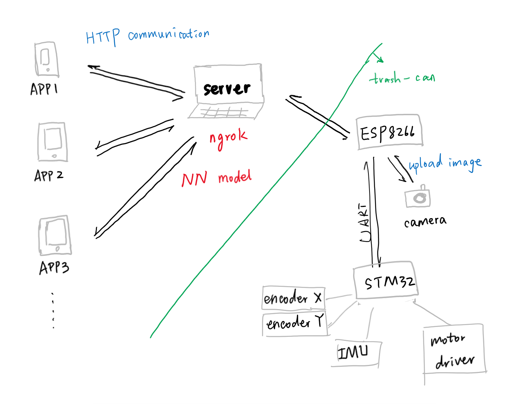
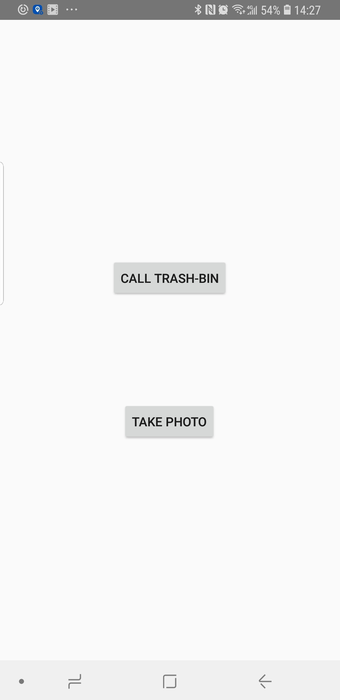
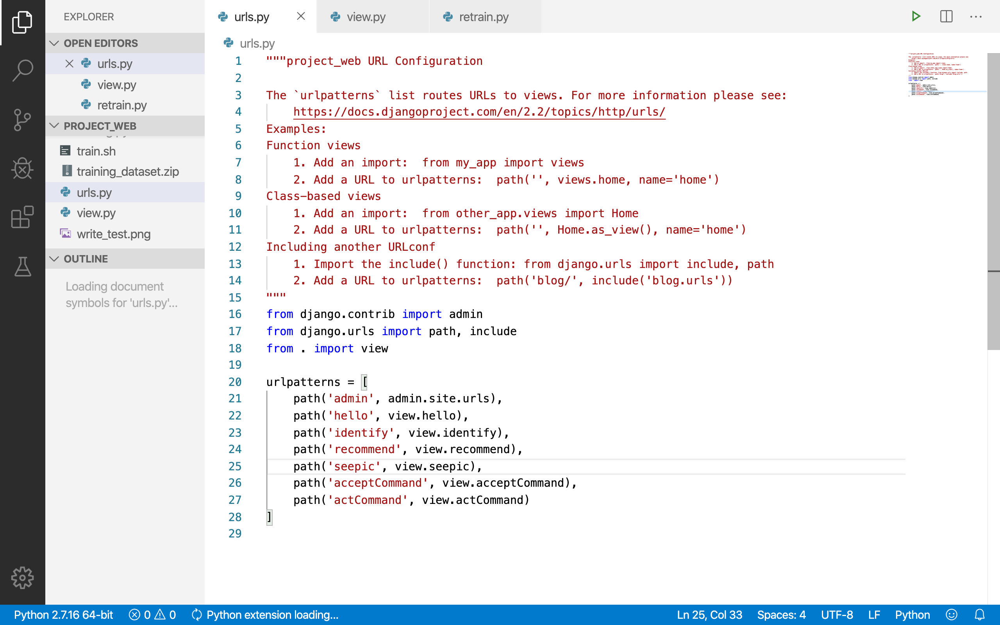
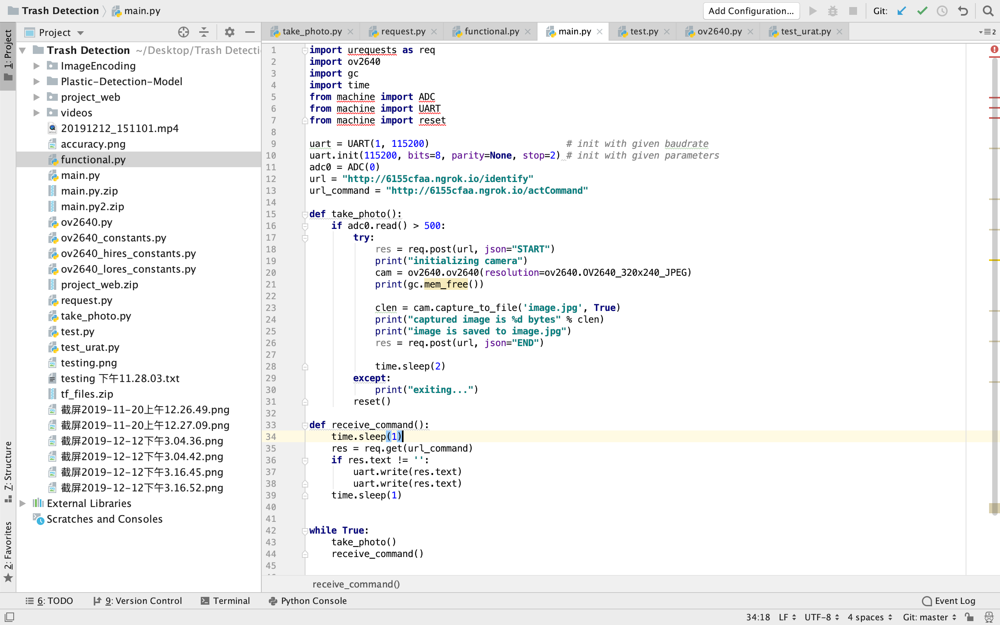
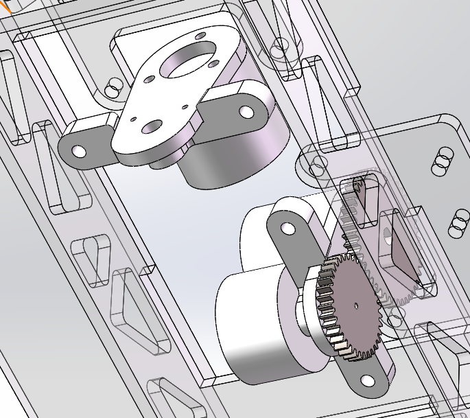
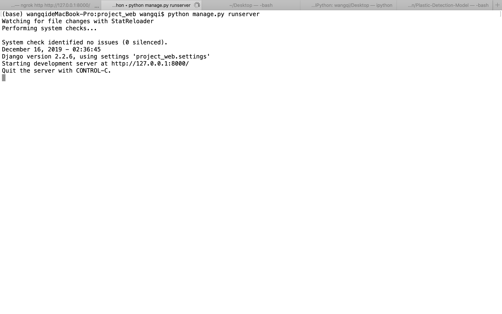
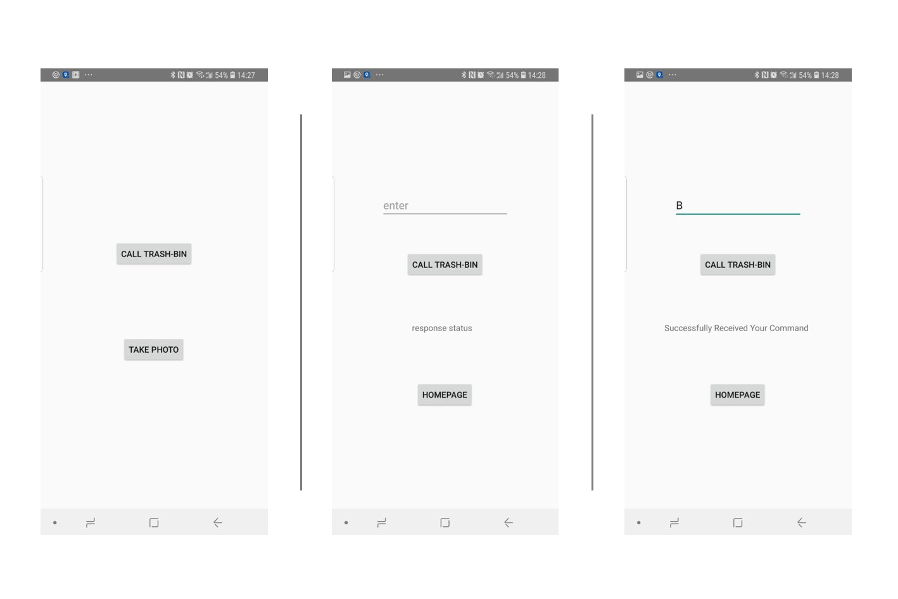
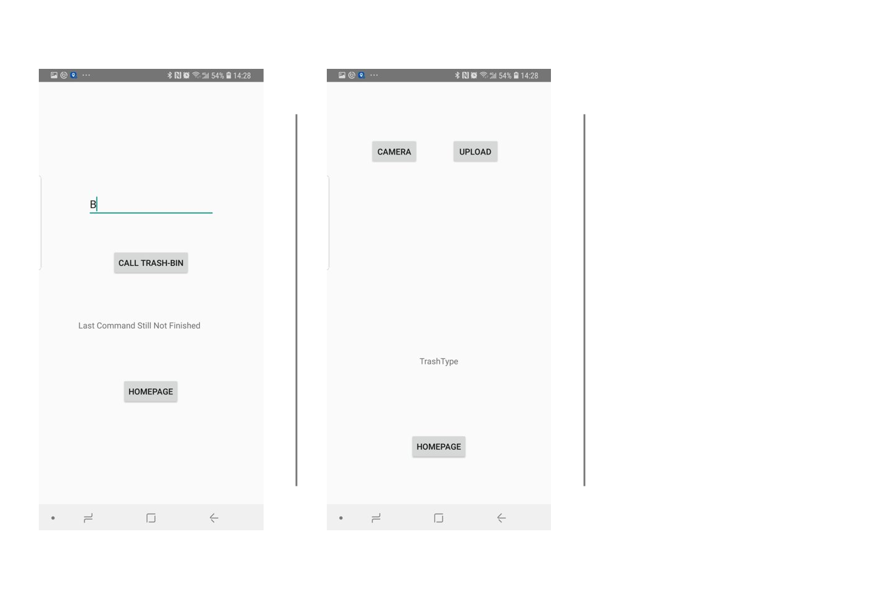

Architecture

Technical Components
There are three main technical components:
APP Design

We used Android Studio to develop a phone APP. There are two functions along with 3 layouts. When
the APP is launched, users will see the homepage with two buttons on it. One is used to redirected
to take_photo layout, the other is used to call_trash_can layout.
Take_photo layout is the page where users can identify the type of trash without calling the
trash-can. Just take a photo and upload it to server, the result will be shown on the page. Clicking
the HOME button can redirected to home page.
Call_trash_can will interact with the trash-can. Users enter his position and click request button,
server will handle this request. The response status received from server will be displayed on this
page. If the response is "successful", the trash-can will come.
Server Design

The server is built by Django and there are '/recommend', '/identify', '/acceptCommand'
and '/actCommand'. We make it public in the internet using ngrok. Then trash identification model
is set up to identify the trash type of incoming images.
The image taken by phone can be post through '/recommend' to server. The server will save the image
and load the trash identification model to obtain the result and return the result to the app of
smart phone.

Due to limit of budget and time, the camera and ESP8266 in SMTB have a not good as enough
performance in photo taking,
which can only take a image and transfer every 10 bytes to the server. So after taking photo,
ESP8266 will upload the image to
server through '/identify'. Our server is going to take around 2 minutes
to receive the whole image and then convert it to a real image from bytes. The results of
identification will be saved for
trash sorting.
Besides, ESP8266 board listens to '/actCommand' in a fixed frequency (currently 3 seconds/ 1 cycle)
to know whether or not there is new command from users. Once it detects the command,
it will interact with STM32 in the car to deliver the instruction. Then the car will follow the
instruction, such as "move to position A"
("A" is a calibrated position in office map), to find a path to the required position.
In addition to the connection between server and SMTB, there is definitely a connection between
server and user.
The user can directly uses the app in the phone. The sent command will be stored in server and
server will return the status of
command processing situation to let user know if the command can be processed or not.
Our trash identification model is built using tensorflow and model Inception-V3 architecture.
The top layer receives as input a 2048-dimensional vector for each image. We
train a softmax layer on top of this representation. Assuming the softmax layer
contains N labels, this corresponds to learning N + 2048 * N model parameters
corresponding to the learned biases and weights. We define the subfolder names as the label.
Also, we use scrapy and beautiful soap to collect images based on the trash type to server as part
of
training set. Furthermore, we also collect samples and loads part of images as training set.
Car Design
The car has two parts, a trash can and an
omnidirectional chassis.
The trash can has an OV2640 camera on its top to take the
picture of the trash. We use an ESP8266 board to read the camera with SPI
protocol and upload the image to the server.
To realize omnidirectional movement, we use four Mecanum
wheels so that it’s much more easier for the trash can to navigate, avoid
obstacle and adjust its attitude. However, due to the budget limits, the whole
chassis is controlled only by a STM32F407 board so theoretically the timer and
uart is not enough for the whole chassis. As a result, all four motors are
open-loop controlled. Only the chassis has a position closed-loop control which
means the navigation is harded.

We build a localization system with two orthogonal placed
encoders and an IMU, which gives the chassis its acceleration, speed, position
and attitude. Since manufacturing methods are limited to laser engraving and 3D
printer, we cannot make a robust encoder system. So we failed to narrow the
localization error with a better algorithm based on non-orthogonal arranged
encoders and very accurate calibration.
Prototype

The prototype was built with the combination of a car and trash bin on the top.

The server is temporarily public in the internet by ngrok.


The app is built by Android Studio.